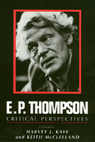

A wide range of authors discuss the historical, theoretical, and political problems that have been central to Thompson's work
A wide range of authors discuss the historical, theoretical, and political problems that have been central to Thompson's work


 A wide range of authors discuss the historical, theoretical, and political problems that have been central to Thompson's work
A wide range of authors discuss the historical, theoretical, and political problems that have been central to Thompson's work

|  |
E. P. ThompsonCritical Perspectivesedited by Harvey J. Kaye and Keith McClellandpaper EAN: 978-0-87722-742-7 (ISBN: 0-87722-742-X) |
For over thirty years, the work of E. P. Thompson as historian, socialist, and peace activist has been enormously influential. Yet attempts to assess the impact of his work as a whole have been rare. This book brings together a wide range of authors who, in original essays, discuss the historical, theoretical, and political problems that have been central to Thompson�s work. The contributors assess the limits and achievements of his writings, and add to the discussion of issues that remain important for both intellectual and political work.
Excerpt available at www.temple.edu/tempress
Preface – Harvey J. Kaye and Keith McClelland
List of Contributors
Introduction – Keith McClelland
1. Edward Thompson, Social History and Political Culture: The Making of a Working-class Public, 1780-1850 – Geoff Eley
2. How Classes Are Made: Critical Reflections on E. P. Thompson�s Theory of Working-Class Formation – William H. SewelI, Jr.
3. The Tale of Samuel and Jemima: Gender and Working-Class Culture in Early Nineteenth-Century England – Catherine Hall
4. Celebrating Thompson�s Heroes: Social Analysis in History and Anthropology – Renato Rosoldo
5. Falling Through the Cracks: E. P. Thompson and the Debate on the Base and Superstructure – Ellen Meiksins Wood
6. History, Marxism and Theory – Robert Gray
7. E. P. Thompson and 'the Significance of Literature' – John Goode
8. Socialist Humanism – Kate Soper
9. From Total War to Democratic Peace: Exterminism and Historical Pacificism – Martin Shaw
10. E. P. Thompson, the British Marxist Historical Tradition and the Contemporary Crisis – Harvey J. Kaye
Index
Harvey J. Kaye is Professor and Chair of Social Change and Development at the University of Wisconsin-Green Bay.
Keith McClelland is Lecturer in History at the University of Reading, UK.
© 2015 Temple University. All Rights Reserved. This page: http://www.temple.edu/tempress/titles/782_reg.html.